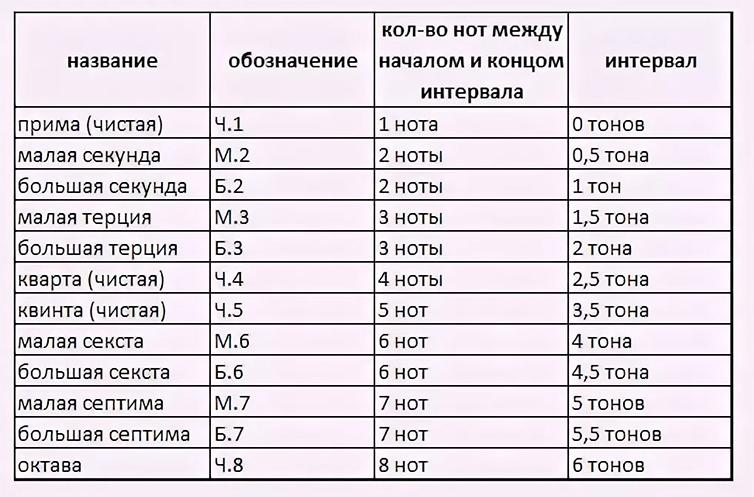

Урок 27. Тоновая величина интервала.
Теория
Тоновая величина интервала — это количество тонов и полутонов, которые содержатся между двумя звуками.
- Например, интервал от До до Ми — это терция, в которой два тона (До–Ре — тон, Ре–Ми — тон).
- В интервале от До до Фа (кварта) — два с половиной тона (До–Ре — тон, Ре–Ми — тон, Ми–Фа — полутон).
- Каждый интервал имеет свою ступеневую и тоновую величину. Интервалы с одинаковым количеством ступеней могут отличаться по количеству тонов и полутонов.
Чтобы определить тоновую величину интервала, нужно посчитать, сколько тонов и полутонов между двумя нотами.
Например, секунда бывает большой (тон, например, До–Ре) и малой (полутон, например, Ми–Фа).
Тоновая величина важна для различения интервалов одного названия, но разного звучания.
Упражнения
- Распознавание тоновой величины: Определите, сколько тонов и полутонов в интервале между двумя нотами (От До до Ре — тон (большая секунда); От Ми до Фа — полутон (малая секунда); От До до Ми — два тона (большая терция); От До до Фа — два с половиной тона (чистая кварта)).
- Пение: Пропойте интервалы с разной тоновой величиной: большая и малая секунда, большая терция, кварта (До, Ре, Ми, Фа, Соль, Ля, Си, До).
Аудио-примеры
Звучание большой и малой секунды:
Визуальные примеры
Тоновая величина интервалов на нотном стане:

Схема тонов и полутонов в интервалах: